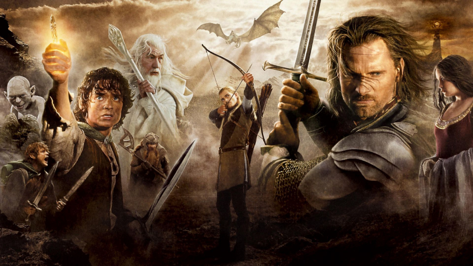

Merhaba ben Özge D. Özcan. İstanbul'da yaşıyorum. 2021 yılında üniversiteden mezun oldum. Kodluyoruz eğitim serisi sayesinde yazılım hakkında yeni şeyler öğreniyorum.
John Ronald Reuel Tolkien'in yazdığı Yüzüklerin Efendisi (İngilizce: The Lord of the Rings) adlı fantastik edebiyat serisinden uyarlanarak çekilmiş Peter Jackson imzalı bir film üçlemesidir.
Seride yer alan filmler şunlardır; Yüzüklerin Efendisi: Yüzük Kardeşliği (2001), Yüzüklerin Efendisi: İki Kule (2002), Yüzüklerin Efendisi: Kralın Dönüşü (2003)
